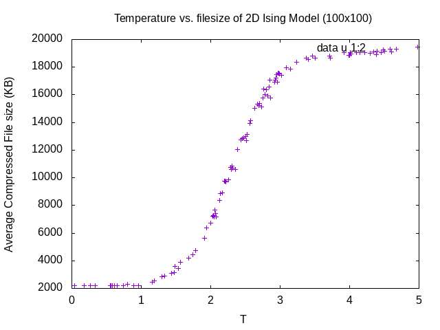

Compression and the ising model
first draft: Jul 10th, 2019
recent update: Aug 27th, 2019
estimated read time: that's on you
some background if you need it
Recently as I was doing some reading1 on applying information theory to detect phase transitions in non-equilibrium systems. What does non-equilibrium mean? well it's a long story.
This stuff is really neat and easy to apply. Information theory sounds really scary and I don't know much about it, but what I do know about is some good old-fashioned compression algorithms. (lossless) compression can be thought of as the act of reducing the size of something while holding the same "information". When looking at order-disorder phase transitions, you may already see where we're heading.
As a fun way to learn a little bit of javascript, today I spent some time looking at Schroeder's web-based physics simulations you can find here. As you might have guessed already (dang you're on a roll), I looked at his ising model simulation.
Information
I guess we'll talk a little about information content first. If you've taken a thermo or stat-mech class, you've probably (hopefully (please god i hope you did)) seen some mathematical definition of entropy. It comes in a bunch of different looking equivalent forms, but the one I'll give to you here is
\[ S(T) = -k_{B} \sum_{i} p_{i} \ln\, p_{i} \]
where pi is the probability of finding the system in state \(i\). dang isn't that a good-looking equation. There's a lot of content in why each part of the expression is chosen. Sometimes the entropy is explained to be how "disordered" a system is. This equation says something more specific. If we choose a different base for the logarithm (say, 2), then the sum is actually long-hand for \(E[-\log\,p_{i}]\), the expectation value of the negative log-probability. This gives us something to work with conceptually. Since \(0 \leq p_{i} \leq 1\), in log base 2, this is giving us the expected number of bits that we would need to encode the frequencies of states for our system. So it's giving us a sort of "best guess" on the amount of information needed to completely describe our system in all of its probabilistic glory. Or something like that, I'm new to this too.
The Shannon entropy might look familiar:
\[H(X) = \sum_{i} p_{i} \log\, p_{i}\]
where \(X\) is some random variable I guess. The same analysis above holds here, we're just not caring about units (more or less) or the second law of thermodynamics anymore.
What's the justification for the entropy here? where's my free energy and its derivatives? >:(
i'll explain this in the future probably just hold tight pls.
statmech game of life (better known as the ising model)
Now what exactly is the ising model? If you took CS31 at Swarthmore Collegetm you'll note that some of the finite-sized simulations look a bit like a game of life model, but more chaotic depending on the temperature. Just like in GoL, there are two possible states that a cell could be in. In the case of the ising model the states, or alphabet, are \(\mathcal{A} = \{-1, 1\}\). A state of size \(N\) chosen from this alphabet we'll denote \(\mathcal{S}_{N} \equiv \{s^{1}, \cdots, s^{N}\}\). These states represent "spin up" and "spin down", the magnetic dipole moments of the atomic spins. As for the dynamics, we get most of the picture just by looking at the Hamiltonian function:
\[ H(\mathcal{S}_{N}) = -\left(J\sum_{i,N(i)}s^i s^{N(i)}+ \mu\sum_{i}Bs^{i}\right).\]
Here I denoted the neighbors of cell \(i\) as \(N(i)\). Couldn't think of any better notation, so we'll deal with it for now. Breaking this down, we can see that the first term represents the interaction between two cells that are neighbors, and the second term represents the bias given by a uniform magnetic field imposed on the system. This bias will skew the magnetics towards a certain spin.
We have all the power, so we're going to drop the second term since we don't care about a bias towards one spin or another (although I'm more of a spin-up kinda guy myself, but I'll leave that for another day). But then where do the dynamics come in? Well hold your horses. The probability of a specific configuration being chosen is given by the classic Boltzmann distribution:
\[ P_{T}(\mathcal{S}) = \frac{e^{\frac{-H(\mathcal{S})}{k_B T}}}{Z_{T}} \]
Looking at this now, people who know a bit of machine learning might notice this is a softmax function (\(Z_T\) is a normalizing constant given by the partition function). Not sure the significance of this since I'm not fluent in ML or physics so let me know if there is one. Otherwise, i'm calling it neat.
Let's try to pin down the dynamics. If every cell is spin-up or spin-down, thenvthe energy simply \(-J\sum_{i,N(i)}1\). If we apply periodic boundary conditions and every cell has four neighbors, then we get something like \(H = -4NJ\). Here, the corresponding probability of that low energy state to occur is at a maximum. Then in the extreme where every neighbor of a cell is the the opposing magnetization, \(H = 4NJ\) and its corresponding probability is at a minimum. So by continuity or something, the system will favor confiugrations that are at least locally uniformly magnetized.
But as we vary \(T\), we would expect the system to be more disordered as the probability distribution slowly smooths out. The temperature acts as a balancing agent to the energy. Or something like that.
So how would we simulate something like this? Well, being the statistical mechanicians we are, we're going to look at a system of magnetized atoms as being in a state of thermal equilibrium. Then, given a system state \(\mathcal{S}\), we flip a only one atom from one magnetic state to another to remain in thermal equilibrium (quasi-static transition between states, reversible, words you may have heard before. all good if not). Well how do we choose this atom? We put on our computer scientist hat and say "well, nothing Monte Carlo simulations can't solve," which is a fancy way of saying brute-force choose from a probability distribution. So we say, given our state \(\mathcal{S}\) and a single atom flip resulting in the state \(\mathcal{S}'\), we choose \(\mathcal{S}'\) with probability given by \(P_{T}(S')\). At least that would be my guess.
ok ok i get it but i do cs not physics
grabbing some of those magnets
Okay with that over, we can talk about Schroeder's simulation. If
you do a little bit of snooping in the source, you'll find the
javascript src block that implements this simulation procedure. It's
pretty fast! As you may have read from the preface of the
simulation, he made this as a proof-of-concept, the concept being
that javascript driven web-simulations can be fast enough to be
useful as a pedagogical tool, rather than having to download some
jar file from PhET.
But we're going to one-up PhET and instead of downloading the simulation, we'll just download every frame of the simulation. Take that!
First we need to take snap-shots of the images that the <canvas>
element is displaying on the web page. To do this, we can use the
function toDataURL given by the canvas element and have that hold
the image data. Then, we create a new hyperlink element <a> and
click on it. Wrap it up in a function and we have our guy. This will
prompt many, many (many) download requests, so don't forget to mark
"Remember this option" or whatever your computer calls it.
/* Download a single img */ function download(T,i) { var link = document.createElement("a"); link.href = canvas.toDataURL("image/png"); link.download = "T"+ T.toString().replace(/\./g, 'p') + "/" + "ising" + i + ".png"; link.style.display = "none"; var evt = new MouseEvent("click", { "view": window, "bubbles": true, "cancelable": true }); document.body.appendChild(link); link.dispatchEvent(evt); document.body.removeChild(link); console.log("Downloading..."); }
Then, we download the png file image for this iteration step. Now,
I don't know about you, but my browser is going to be very upset
with the number of images being downloaded. So don't forget to check
the "remember for next time" box. For your own safety.
function simulate() { if (running) { // Execute a bunch of Monte Carlo steps: ... download(T,i); ... } }
You can make some other modifications, such as randomizing the
temperature to be within a range (e.g. for [1.8,3] assign T =
1.8+Math.random()*1.2). Don't forget to round if you want. I'm not
ur parent
dealing with all the files
All the files downloaded were given a name in the format
T$(temp)_ising$(i). Therefore all we need is to make a directory
with name T$(temp) and we'll be all sorted to make some graphs I
guess.
(let ((dir "~/sum19/ising/Temps/100x100/")) (dolist (F (f-glob "~/Downloads/T*ising*")) (let* ((full-temp (first (last (split-string F "/")))) (only-temp (first (split-string full-temp "_"))) (temp-dir (concat dir only-temp "/"))) (mkdir temp-dir t) (rename-file F temp-dir))))
Then we get the file size of each png file and average over the
temperature. In the process, we also output an org table that we
can easily feed into gnuplot. It's not the best Elisp I've written,
but it gets the job done.
(defun traverse-temperatures (temp-list output) ;; Traverse through the temperature directories to find out the ;; average file size obtained. Tail recursive! (if (= (length temp-list) 0) output (let* ((dirname (car temp-list)) (temp-string (first (last (split-string dirname "/")))) (temp-value (substring temp-string 1 (length temp-string))) (filesizes (mapcar #'(lambda(x) (file-attribute-size (file-attributes x))) (directory-files dirname t ".*png")))) (traverse-temperatures (cdr temp-list) (concat output (format "|%s |%d|\n" (replace-regexp-in-string "p" "." temp-value) (/ (reduce #'+ filesizes) (length filesizes)))))))) (traverse-temperatures (directory-files "~/sum19/ising/Temps/uniform_init" t "T.*") "#+TBLNAME: TvsS\n|T | filesize|\n|------+-----|\n")
Now all we have to do is plot the data that we grabbed from system
statistics. To do this, we feed the above table into the amazing
gnuplot and make a simple graph of points in a region of interest
(T∈[0,5]).
Maybe a second to talk about what we're going to expect here. At low temperatures, file size will be smallest since the system will stay roughly uniform. As we increase the temperature, there will be a corresponding increase in the background noise of other spins. Close to the critical point, we would expect islands and blobs to start forming. After the critical point, things will become very noisy and there will be some upper-bound on the compressed file-size, corresponding to a maximally "random" configuration. Then qualitatively, we may expect the critical point to be the inflection point of information content. Who knows.
set title "Temperature vs. filesize of 2D Ising Model (100x100)" set xlabel "T" set ylabel "Average Compressed File size (KB)" set xrange [0:5] plot data u 1:2 with points

So that's cool, we can probe the critical points of some order parameter by looking at the changes in entropy between different values of that order parameter. We can probably do even better. But I'm lazy.
anything more? well sure
So that's great and all but it could be faster, and I need an excuse
to get back to C.
But how will we make nice looking videos and graphics with C? I'm
glad you asked thank you. There are these amazing file formats known
as the Netpbm file formats. A stream of these can be piped to a
good video encoder (like x264) to an mp4 which you can view to your
own pleasure. You can find the code here.
Usage:
./ising | x264 --fps 60 -o video.mp4 /dev/stdin
If you'd like a gif to use (say, at 30fps for 3 seconds), you can also run ffmpeg:
ffmpeg -i video.mp4 -r 30 -vf scale=512:-1 -ss 00:00:01 -to 00:00:04 video.gif

Figure 2: N=500, 1k sweeps at T=2.2691 (close to critical point)
It's bigger faster better stronger. Might do some correlation length analysis with this code sometime in the future. tune in I guess
FAQs that haven't been asked yet
why do this when u already have an analytic expression for entropy
well first of all its cool and that's all the explanation i need.
But other than that, this is more of a proof-of-the-concept that more complicated systems with more subtle order-disorder phase transitions could possibly be probed by the information content of the system. Even for non-equilibrium systems! Amazing! (See 1)
why lisp
i reserve the right to withhold a response to this
Table results exports
| T | filesize |
|---|---|
| 0.04 | 2210 |
| 0.18 | 2210 |
| 0.27 | 2210 |
| 0.34 | 2210 |
| 0.55 | 2210 |
| 0.56 | 2210 |
| 0.58 | 2210 |
| 0.61 | 2210 |
| 0.65 | 2210 |
| 0.74 | 2210 |
| 0.8 | 2297 |
| 0.89 | 2210 |
| 0.96 | 2210 |
| 1.16 | 2428 |
| 1.19 | 2547 |
| 1.3 | 2849 |
| 1.34 | 2875 |
| 1.44 | 3092 |
| 1.48 | 3165 |
| 1.49 | 3594 |
| 1.53 | 3426 |
| 1.56 | 3880 |
| 1.68 | 4184 |
| 1.74 | 4416 |
| 1.78 | 4754 |
| 1.91 | 5634 |
| 1.94 | 6383 |
| 2 | 6734 |
| 2.03 | 7211 |
| 2.04 | 7285 |
| 2.05 | 7150 |
| 2.06 | 7665 |
| 2.07 | 7412 |
| 2.08 | 7160 |
| 2.13 | 8343 |
| 2.14 | 8870 |
| 2.17 | 8890 |
| 2.2 | 9735 |
| 2.21 | 9758 |
| 2.22 | 9695 |
| 2.26 | 9833 |
| 2.29 | 10732 |
| 2.3 | 10618 |
| 2.31 | 10829 |
| 2.32 | 10686 |
| 2.36 | 10603 |
| 2.39 | 12043 |
| 2.44 | 12744 |
| 2.46 | 12820 |
| 2.48 | 12890 |
| 2.5 | 12979 |
| 2.51 | 12685 |
| 2.52 | 13141 |
| 2.56 | 13940 |
| 2.57 | 14140 |
| 2.63 | 15012 |
| 2.67 | 15346 |
| 2.69 | 15227 |
| 2.7 | 15374 |
| 2.73 | 15123 |
| 2.75 | 15757 |
| 2.76 | 16435 |
| 2.78 | 16023 |
| 2.8 | 16347 |
| 2.82 | 15924 |
| 2.84 | 16574 |
| 2.85 | 17052 |
| 2.86 | 15757 |
| 2.92 | 16936 |
| 2.93 | 17072 |
| 2.94 | 17202 |
| 2.95 | 17479 |
| 2.96 | 16937 |
| 2.97 | 17588 |
| 2.98 | 17561 |
| 2.99 | 17521 |
| 3.02 | 17431 |
| 3.09 | 17978 |
| 3.15 | 17855 |
| 3.24 | 18348 |
| 3.38 | 18680 |
| 3.41 | 18578 |
| 3.47 | 18816 |
| 3.5 | 18669 |
| 3.71 | 18806 |
| 3.72 | 18644 |
| 3.92 | 19063 |
| 3.99 | 18848 |
| 4 | 18851 |
| 4.01 | 19034 |
| 4.02 | 18957 |
| 4.1 | 19068 |
| 4.15 | 19049 |
| 4.22 | 19054 |
| 4.3 | 19028 |
| 4.35 | 19116 |
| 4.39 | 18920 |
| 4.4 | 19173 |
| 4.46 | 19073 |
| 4.49 | 19237 |
| 4.5 | 19144 |
| 4.6 | 19096 |
| 4.67 | 19296 |
| 4.98 | 19437 |
haha
Footnotes:
An amazing paper by Dov Levine and his group on the usage of information entropy to detect order-disorder phase transitions: https://journals.aps.org/prx/abstract/10.1103/